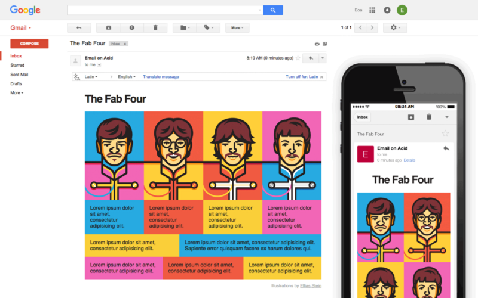

Hello World
CodeTengu Weekly 碼天狗週刊
CodeTengu Weekly 會在 GMT+8 時區的每個禮拜一早上 10:00 出刊，每一期會從目前的 curator 名單中選出三位來負責當期的內容，每一位 curator 各自負責不同的領域，如果你在這一期沒有看到自已感興趣的東西，說不定下一期就會有了。
你也可以瀏覽一下前幾期的內容，有價值的東西是不會過時的。
以下是目前的 curator 陣容：
- @vinta - I failed the Turing Test - 楊威利腦殘粉
- @saiday - Imnotyourson - 捷運飲食推廣委員會
- @tzangms - Oceanic / 人生海海 - 衝動型購物
- @fukuball - ImFukuball - 機器學習好難
- @wancw
- @adamp33 - 看棒球才是正職，副業是前端工程師
- @mingderwang
- @kako0507 - 熱愛嘗試新事物的前端工程師
- @chiahsien - Nelson
大家也可以 follow 一下 CodeTengu 的 Facebook、Twitter 或 GitHub，有很多 Weekly 看不到的內容。有任何建議或疑問也可以來 Gitter 聊一聊，歡迎亂入 👺
 @saiday
@saiday
What every iOS Developer should be doing with Instruments
Xcode 帶的 Instruments 是一個強大的 Profiling 工具，我認為資深的 iOS 工程師是能科學的利用 Instruments 找到程式效能瓶頸及 Memory leak，如果打開之後只會用肉眼看那是不行的！
這篇文章很像是 Ray Wenderlich 上面 How to Use Instruments in Xcode[1] 的濃縮版，篇幅很小，重點都有講到，適合還沒有經驗的人。
更詳細的介紹可以參考 Ray Wenderlich 新寫的教學 Instruments Tutorial with Swift: Getting Started 或 Finding iOS Memory Leaks with Xcode’s Instruments。
NSUserDefaults In Practice
這是 Apple 的工程師寫的 NSUserDefaults 介紹跟 best practice。
列一些我覺得重要的：
- StandardUserDefaults 裡面存的內容可以用 KVO 來觀察
- 不需要從 NSUserDefaults 做 cache，因為它已經很快了
- 除非你有其他 process 要用這個 defautls 或馬上要結束現在的 process，否則不需要自己執行
synchronizemethod - UserDefaults 第一次被讀取的時候會把整包加載到記憶體，因此裡面放了超大的東西，那你就哭哭囉
Building Android Apps — 30 things that experience made me learn the hard way
Android 開發最佳實踐清單！
Retrofit, RxJava, Dagger2 及 Retrolambda 儼然是現代 Android app 的四大天王了。
他提到 Package by features, not layers ，不要用 Activities 跟 Fragments 來分 package，而是用功能或頁面來分，蠻有趣的，貌似有點道理。
至於 Gradle 加速，我覺得這個更詳細些 Making Gradle builds faster。
Help developers with custom Lint rules
原來 Lint 是可以自己寫條件擴展的！ 如果沒有額外做排除的話，在每次 gradle build 的時候都會跑 lint，因此很適合做自己的 coding style linter。
作者提到兩個不同的情境：
- 為你的 library / framework 寫 lint rules
- 團隊用的 coding style rules
@adamp33
Google AMP 專案正式上線
Google 為手機瀏覽網頁所推出的加速計畫在本週上線，只要照著教學做，你的內容網頁也能夠在 Chrome 手機瀏覽器獲得類似 Facebook Instant Article 的效果，而且在搜尋結果時看到支援 AMP 的圖示。
目前 Google 表示是否採用 AMP 目前還不是 SEO 的指標項目，不過以顯示方式來看，的確比一般連結更容易被點擊。
線上預覽 RWD 網頁工具
Google 的 Resizer 工具可以讓你同時在三種不同尺寸解析度下觀看網頁（桌面、平板和手機），還可以做互動，比起只有截圖的工具實用許多。
Chrome Dev Tool 也有同樣功能的工具，缺點則是無法一次預覽三種尺寸。

使用 calc() 來實作 Responsive Email
Rémi Parmentie 使用 CSS 的 calc() 計算屬性，搭配 max-width 和 min-width，可以在支援 calc 的 e-mail client 上實現自適應版型，相當神奇。解決令人頭痛的 e-mail 在不同解析度和瀏覽器的排版問題。
而且 Gmail 的 web 版和 app、Apple Mail 和 Outlook.com 都支援，而且就算不支援還是能透過 min-width 和 max-width 做到優雅降級。
 @mingderwang
@mingderwang
XG Boost
在各種指導式機械學習 (supervised machine learning) 模型當中, 目前看來, 可以說 XGBoost 速度最快而且正確。在 Kaggle 的預測競賽裡, 有些問題利用 XGBoost 方法常常得到第一, 之前只有 R 版本, 後來又有 Python, Java, C++ 版本可以使用。 有興趣瞭解 boosting trees 原理的人, 可以參考 Tianqi Chen 的 Introduction to Boosted Trees (複雜的公式可以跳過, 只看圖解的部分, 保證你看的懂)。 而想要實做的人可以參考 Michaël Benesty 的 Understanding XGBoost Model on Otto Dataset 教學。
Financial Inclusion
這個專有名詞我也是第一次聽到, 但在 fintech 世界裡, 確是佔 20% 最大的一片市場。在這份 2015 年 fintech 問卷調查 裡可以發現, 它從前年 30% 跌到 20%, 這意味着 fintech 轉移重點到其他區隔 (這是好事, 因爲其他區隔現有的銀行就比較有意願參與)。但反觀 financial inclusion 是想要解決地球上還有 20 憶人口沒有能力或無法借款的人財務上的問題, 畢竟印度跟中國還有很大的市場可以開發。 那跟我們寫程式的人有什麼關係呢? 還找不到新創題目的公司或個人, 可以想想在 fintech 流行之際, 我們能寫什麼程式, 能用什麼技術來讓財金界使用。(這些不包含電子商務喔), 例如 "財務管理", "支付", "區塊鏈" (Blockchain as a Service), "保險" 等等, 如果這些現有銀行或保險公司不做或不趕快做, ApplePay, "小米", "支付寶" 之類的公司, 會很快把客戶搶光, 因爲世界就這麼點大...
Microservices in Go using Go-kit
分散式程式開發技術已經成爲寫 microservices 架構必要的技能, 而針對 go 語言, heroku 的 go-kit 提供了程式設計師寫分散式程式一些必要的工具, 例如創造 endpoints, services, transport, circuit break, ratelimit, logging, metrics, request tracking, 以及 service discovery 和 load balancing 等。如果想了解這些專有名詞是什麼, 你可以看 Peter Bourgon 的 Go Kit: A Standard Library for Distributed Programming。 看完上述的 youtube, 你可以照着 Go-kit 101 以及它所提供的範例實做。學會如何使用 go-kit, 你就可以開始寫 microservices 架構的程式了。
Random Cool Stuff
Judging the Stupidity of GitHub Projects by Stars and Forks
這個還蠻好笑的，這個作者宣稱他在 GitHub 上找到笨蛋指標：亂用 Fork 。
Fork 數減掉有發 pull request 的人數當成分子 star 數當成分母，是這個 GitHub repo 的笨蛋率。
由 @saiday 提供。